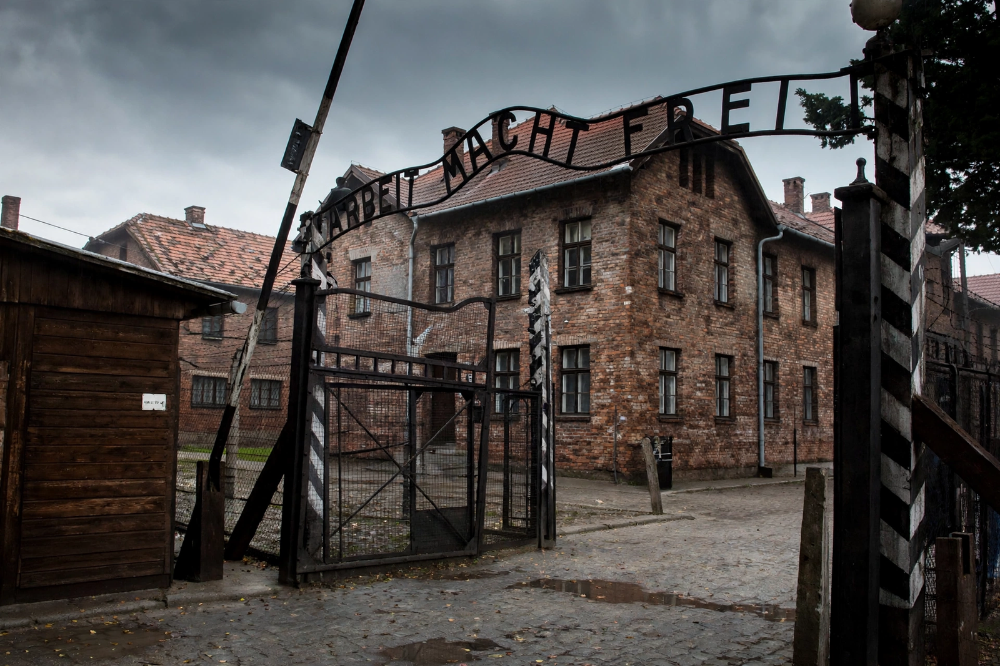

From Wikipedia, the free encyclopedia
| Auschwitz concentration camp | |
|---|---|
 | |
| Location | Oświęcim, German-occupied Poland |
| Operated by | Nazi Germany, SS |
| Operational | 20 May 1940 – 27 January 1945 |
| Components | Auschwitz I, Auschwitz II–Birkenau, Auschwitz III–Monowitz, subcamps |
| Victims | At least 1.1 million murdered, the great majority Jews |
| Liberated | Red Army, 27 January 1945 |
Auschwitz (German: Konzentrationslager Auschwitz) was a complex of over 40 concentration and extermination camps operated by Nazi Germany in occupied Poland during World War II and the Holocaust. It consisted of Auschwitz I, the main camp (Stammlager) in Oświęcim; Auschwitz II–Birkenau, a concentration and extermination camp with gas chambers; Auschwitz III–Monowitz, a labour camp for the IG Farben chemical works; and numerous subcamps.
Of the approximately 1.3 million people sent to Auschwitz, at least 1.1 million were murdered. Around 960,000 of the dead were Jews; the other victims included Poles, Romani people, Soviet prisoners of war, and others. Most were killed in the gas chambers of Birkenau using Zyklon B; others died from starvation, forced labour, disease, individual executions, and medical experiments.
The camp was established in 1940, initially for Polish political prisoners. From 1942 it became the largest centre of the mass murder of Europe's Jews under the "Final Solution". Transports arrived by rail from across German-occupied Europe; on arrival, most deportees were selected for immediate death. Commandant Rudolf Höss testified after the war to the scale of the killing programme.
As the Red Army approached in January 1945, the SS evacuated some 58,000 prisoners on death marches westward. Soviet troops liberated the camp on 27 January 1945, a date now commemorated as International Holocaust Remembrance Day. The site is preserved as the Auschwitz-Birkenau State Museum and was inscribed on the UNESCO World Heritage List in 1979. Auschwitz has become the world's principal symbol of the Holocaust and of the crimes of Nazi Germany.
Categories: Auschwitz concentration camp | The Holocaust | World Heritage Sites in Poland